Bryce Canyon National Park Travel Guide
Collection of giant natural amphitheaters containing spectacular views of geological structures with red, orange, and white colors called hoodoos, formed by frost weathering and stream erosion of the river and lake bed sedimentary rocks
Bryce Canyon Visitor Center
Spring Hours
March 15 - April 25
Open 8am to 6pm
Summer Hours
April 26 - September 26
Open 8am to 8pm daily
Fall Hours
September 27 - November 7
Open 8am to 6pm daily
Winter Hours
November 8 - March 14
Open 8am to 4:30pm daily
Good for seven days
Accepts America The Beautiful Pass
How to Get There
From Zion National Park (85mi) Head northwest on Sundance Rd toward Zion Park Blvd. Turn right onto UT-9 E/Zion Park Blvd. Continue to follow UT-9 E. Turn left onto US-89 N/State St. Continue to follow US-89 N. Turn right onto UT-12 E. Turn right onto UT-63 S
Overview
Bryce Canyon National Park in southwestern Utah is famous for hoodoos, the tall, thin spires of rock that fill a series of natural amphitheaters along the edge of the Paunsagunt Plateau. Despite its name, it is not a true canyon but a set of erosion bowls. Frost wedging and rainwater have carved the colorful Claron Formation limestone into thousands of orange, pink, and red spires that glow at sunrise and sunset. The park sits at 8,000 to 9,100 feet, so it is cool in summer and snowy in winter, and it is also a certified International Dark Sky Park.
The area was named for Ebenezer Bryce, a Mormon pioneer who settled nearby in the 1870s. It was protected as a national monument in 1923, then as Utah National Park in 1924, and it became Bryce Canyon National Park in 1928. People come to look down into the amphitheater from the rim viewpoints, walk among the hoodoos on the trails below, watch the sunrise, and see the stars. Because the viewpoints are right along the rim, it is easy to enjoy even on a short visit.
Park Sections
The park is long and narrow, and most of what visitors see lies along the 18-mile main park road running south from the entrance. The Bryce Amphitheater, the largest and most famous bowl, has the Sunrise, Sunset, Inspiration, and Bryce viewpoints, as well as the visitor center and Bryce Canyon Lodge. North of the entrance, Fairyland Point overlooks a quieter section of hoodoos. South of the amphitheater, the road climbs to Rainbow Point and Yovimpa Point, the highest points in the park at about 9,100 feet. The Mossy Cave area is reached from Utah Highway 12, outside the main entrance.
Sightseeing and Exploring the Park
The Bryce Canyon scenic drive runs about 18 miles one way from the park entrance to Rainbow Point and has 13 viewpoints along the way. The most popular viewpoints are in the amphitheater, where Sunrise, Sunset, Inspiration, and Bryce Point give different views of the hoodoos, including the Thor's Hammer formation. Farther south, Natural Bridge, Agua Canyon, Ponderosa Canyon, and Rainbow Point offer wide views over the Paria Valley and the surrounding plateaus. On clear days you can see 100 miles or more into Arizona and New Mexico. The road is paved and open year-round, although winter storms may close it temporarily.
Hiking
Bryce has trails of all levels, and the most memorable ones go down below the rim among the hoodoos. The Rim Trail runs along the edge of the amphitheater for about 5.5 miles and is mostly easy. The combined Queen's Garden and Navajo Loop hike, about 2.9 miles, is the most popular and takes 2 to 3 hours. The Peekaboo Loop and Fairyland Loop are longer strenuous hikes with a lot of up and down. The Bristlecone Loop is an easy 1-mile loop at Rainbow Point. The Under-the-Rim Trail (23 miles) and Riggs Spring Loop (9 miles) are overnight backpacking routes that require a permit. Hiking is slower at this altitude, and summer afternoon storms are common.
Other Activities
Beyond hiking and sightseeing, Bryce offers horseback and mule rides into the canyon, guided by a concessioner from near Bryce Canyon Lodge, stargazing programs and an annual astronomy festival in June, ranger-led walks and evening talks, and a Junior Ranger program for children. In winter, visitors can snowshoe or cross-country ski along the rim and on selected trails. There is no commercial outfitter for rafting or other water sports, but the nearby Red Canyon, Grand Staircase-Escalante National Monument, and Zion National Park add other activities in the region.
Flora and Wildlife
The park's elevation supports forests of ponderosa pine, Douglas fir, blue spruce, and aspen, along with ancient bristlecone pines on the high southern rim. Wildflowers bloom through summer. Wildlife includes mule deer, which are often seen near the roads, Utah prairie dogs, which live in the meadows near the park's edge, pronghorn, golden-mantled ground squirrels, and a wide range of birds such as Steller's jays, ravens, and peregrine falcons. Black bears and mountain lions live in the park but are rarely seen. Viewing is on your own, and it is best in early morning or evening.
Access
Bryce Canyon lies in south-central Utah, off Utah Highway 12, with the entrance about 3 miles south of the highway on Highway 63; the small town of Tropic is about 10 miles east. Most visitors drive. Las Vegas is about 270 miles and 4 hours away, Salt Lake City is about 270 miles and 4 hours north, and Zion National Park is roughly 1.5 to 2 hours west. The closest commercial airport is Cedar City, about 80 miles away, and the nearest larger airports are in Las Vegas and Salt Lake City. A summer shuttle serves the main viewpoints and the area near the park.
Seasons
Summer is the busiest season, with pleasant temperatures at elevation but crowds and afternoon thunderstorms. Spring and fall are quieter, though weather can change quickly. Winter is cold, with heavy snow, and the park is much less crowded; the hoodoos covered with snow are a popular sight, and the main road is plowed. Some trails may be closed by ice or snow, and some facilities, including parts of the campgrounds and Bryce Canyon Lodge, are closed seasonally. Sunrise and sunset are the best times for color throughout the year.
Camping and Lodging
The park has two campgrounds, North Campground and Sunset Campground. Loop A in North Campground is open year-round, while additional loops and Sunset Campground are open from late spring to early autumn. The historic Bryce Canyon Lodge, with about 114 rooms and cabins, is open from spring to fall. Just outside the park, Ruby's Inn (Best Western Plus Ruby's Inn) and nearby motels and campgrounds are about 3 miles from the entrance, and Tropic and Panguitch offer more motels and cabins. Red Canyon, about 15 minutes west, has a campground in Dixie National Forest, and Cedar City and Kanab, each about 1.5 hours away, have a wider range of hotels.
Visitor Centers
The Bryce Canyon Visitor Center, near the park entrance, is the park's main visitor center and has exhibits, a short film, a bookstore, and rangers who can advise on trails and conditions. It is open year-round except for some holidays, with longer hours in summer. Backcountry permits for overnight trips can be obtained here. Many visitors also stop at Ruby's Inn, outside the park, which has a general store, restaurant, and other services.
Shuttle System
Bryce Canyon operates a free shuttle during the busy season, usually from spring through fall. The shuttle runs in two parts: one route serves the amphitheater viewpoints, the visitor center, Bryce Canyon Lodge, and the campgrounds, and a second route connects the park with the area outside the entrance, including Ruby's Inn and nearby lodging. A ranger-led Rainbow Point bus tour covers the southern part of the scenic drive. Using the shuttle avoids parking problems at the busiest viewpoints, and you can get on and off at many stops. Check the National Park Service website for current routes and times.
Highlights
- Bryce Amphitheater: the main viewpoints (Sunrise, Sunset, Inspiration, and Bryce points) along the rim
- Queen's Garden and Navajo Loop: the most popular hike, about 2.9 miles
- Rainbow Point and Yovimpa Point: the highest viewpoints, at the end of the 18-mile scenic drive
- Fairyland Point: a quieter view at the north
This article uses material from the Wikipedia article "Bryce Canyon National Park", which is released under the Creative Commons Attribution-Share-Alike License 3.0. Additional information comes from the National Park Service Bryce Canyon National Park website.
Featured Sections and Trails
Ronnie Macdonald from Chelmsford, United Kingdom, CC BY 2.0, via Wikimedia Commons; Image Size Adjusted
Bristlecone Loop Trail
0.9 miles, 320 feetA short, high-elevation loop through ancient bristlecone pine forest with panoramic views over Bryce Canyon and the Grand Staircase, offering one of the park’s most accessible scenic hikes.
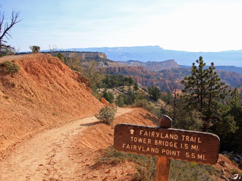
Fairyland Loop Trail, Bryce Canyon National Park, UT
Ronnie Macdonald from Chelmsford, United Kingdom, CC BY 2.0, via Wikimedia Commons
.jpg){kind=link}
Fairyland Loop
0.9 miles, 320 feetA long, immersive loop descending into Bryce Canyon’s hoodoo-filled backcountry, featuring dramatic rock formations, fewer crowds, and sweeping views both above and below the rim.
Ronnie Macdonald from Chelmsford, United Kingdom, CC BY 2.0, via Wikimedia Commons; Image Size Adjusted
Fairyland Point
0.9 miles, 320 feetOverlook featuring colorful hoodoo-filled canyons, rugged cliffs, and expansive views of some of the park’s youngest and most intricate rock formations.
Ronnie Macdonald from Chelmsford, United Kingdom, CC BY 2.0, via Wikimedia Commons; Image Size Adjusted
Mossy Cave Trail
0.9 miles, 320 feetShort hike leading to a mossy grotto, seasonal waterfall, and colorful canyon formations, offering an easy introduction to Bryce Canyon’s landscape outside the main amphitheater.
Grinnell Point and Swiftcurrent Lake from the Many Glacier Hotel
Jeff P from Berkeley, CA, USA, CC BY 2.0, via Wikimedia Commons; Image Size Adjusted
.jpg){kind=link}
Natural Bridge
0.9 miles, 320 feetLarge red-rock arch carved by erosion and frost action, spanning a forested canyon and creating one of the most striking geological viewpoints along the scenic drive.
Ronnie Macdonald from Chelmsford, United Kingdom, CC BY 2.0, via Wikimedia Commons; Image Size Adjusted
Peekaboo Loop Trail
0.9 miles, 320 feetA strenuous loop descending deep into Bryce Amphitheater, offering up-close encounters with towering hoodoos, arches, and some of the park’s most impressive and less crowded formations.
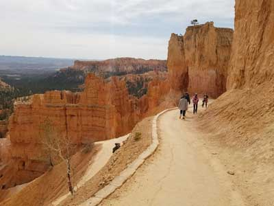
Jeff P from Berkeley, CA, USA, CC BY 2.0, via Wikimedia Commons; Image Size Adjusted
Queens Garden Trail
0.9 miles, 320 feetConsidered the least difficult trail entering the canyon from the rim. Traveling this trail you will see many hoodoos, representative of garden like features
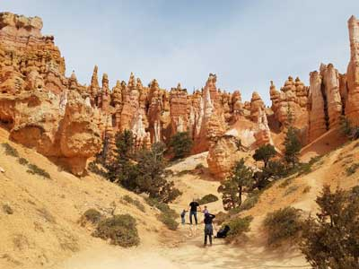
Jeff P from Berkeley, CA, USA, CC BY 2.0, via Wikimedia Commons; Image Size Adjusted
Navajo Trail
1.3 miles loop, 520 feetTravels by switchbacks down between narrow walls of colorful limestone with views of towering Douglas-fir trees and the park's most famous hoodoo: Thor's hammer
Grinnell Point and Swiftcurrent Lake from the Many Glacier Hotel
Jeff P from Berkeley, CA, USA, CC BY 2.0, via Wikimedia Commons; Image Size Adjusted
Rainbow Point
0.9 miles, 320 feetHigh-elevation overlook featuring sweeping views of colorful cliffs, forested plateaus, distant mountain ranges, and the dramatic geologic formations of the surrounding landscape.
Ronnie Macdonald from Chelmsford, United Kingdom, CC BY 2.0, via Wikimedia Commons; Image Size Adjusted
Rim Trail
0.9 miles, 320 feetA scenic, flexible trail following the rim of Bryce Canyon’s amphitheater, offering continuous panoramic views of hoodoos and easy access to the park’s most iconic overlooks.
Grinnell Point and Swiftcurrent Lake from the Many Glacier Hotel
Jeff P from Berkeley, CA, USA, CC BY 2.0, via Wikimedia Commons; Image Size Adjusted
Yovimpa Point
0.9 miles, 320 feetHigh-elevation overlook offering expansive views across colorful cliff formations, forested plateaus, distant mountain ranges, and the layered landscape of the Grand Staircase.
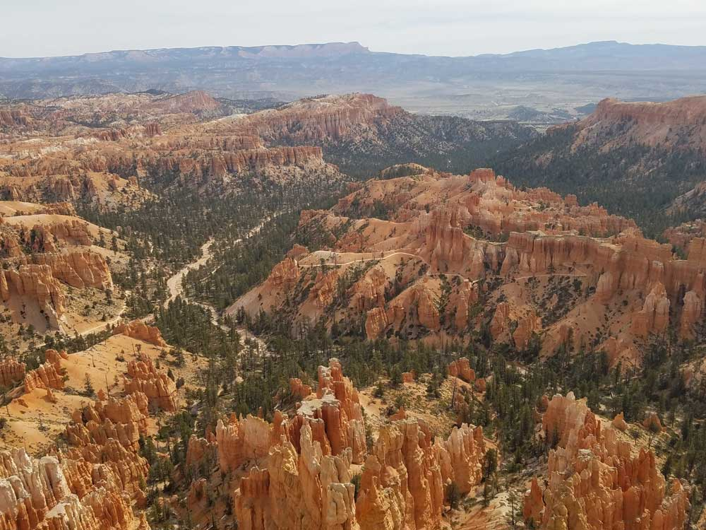
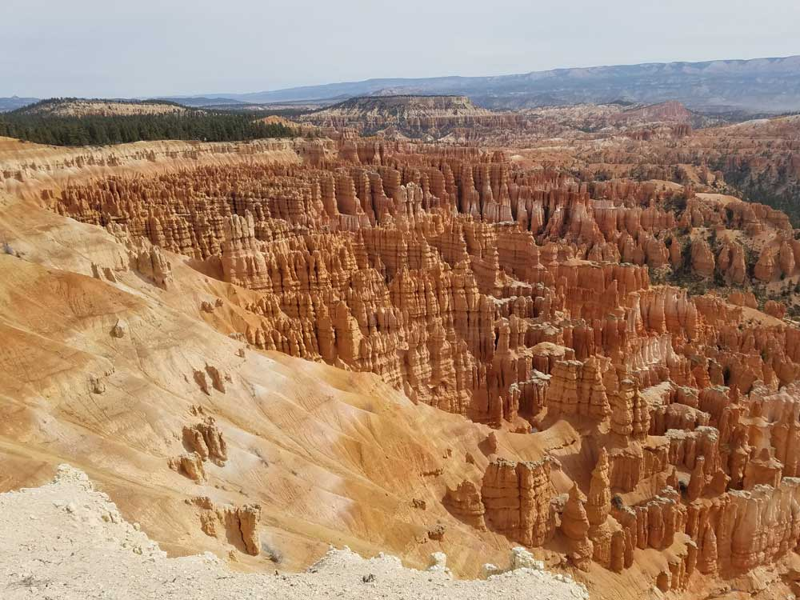
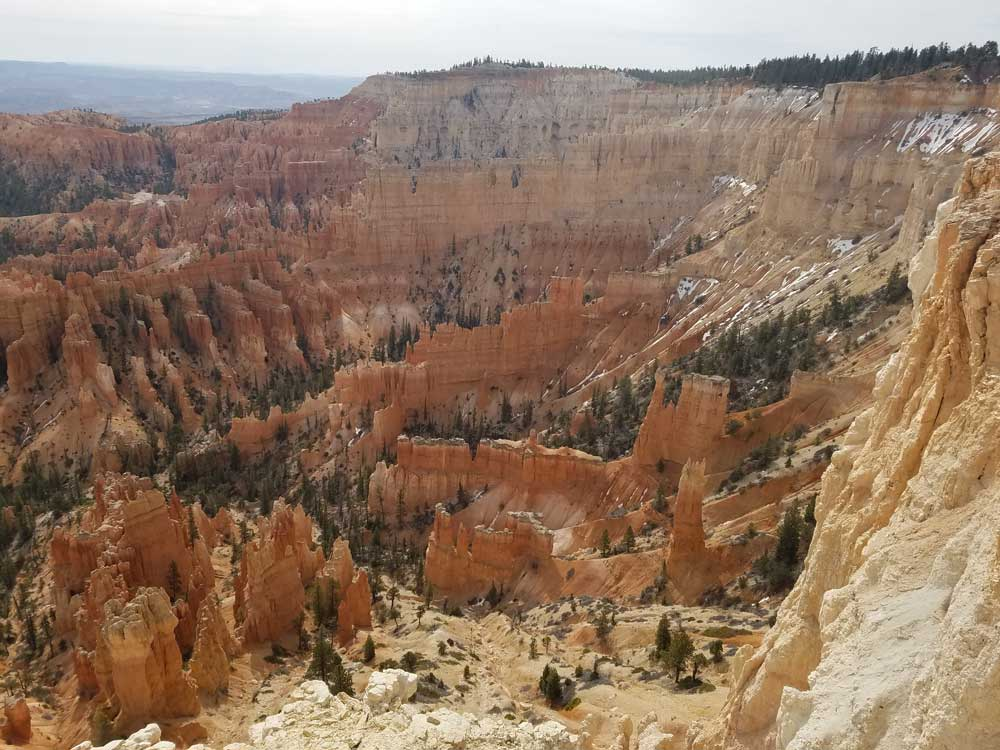
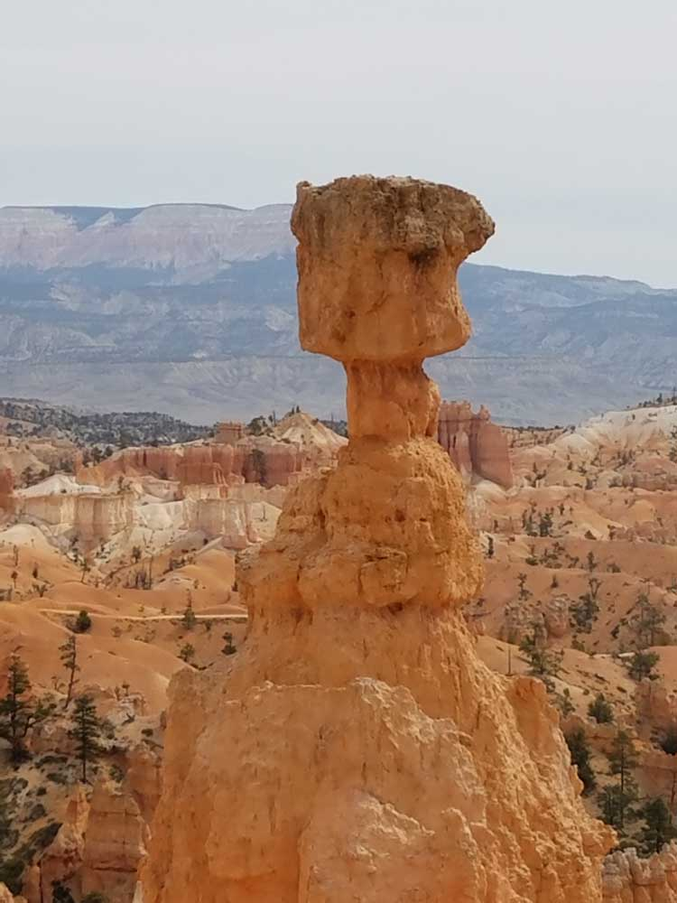
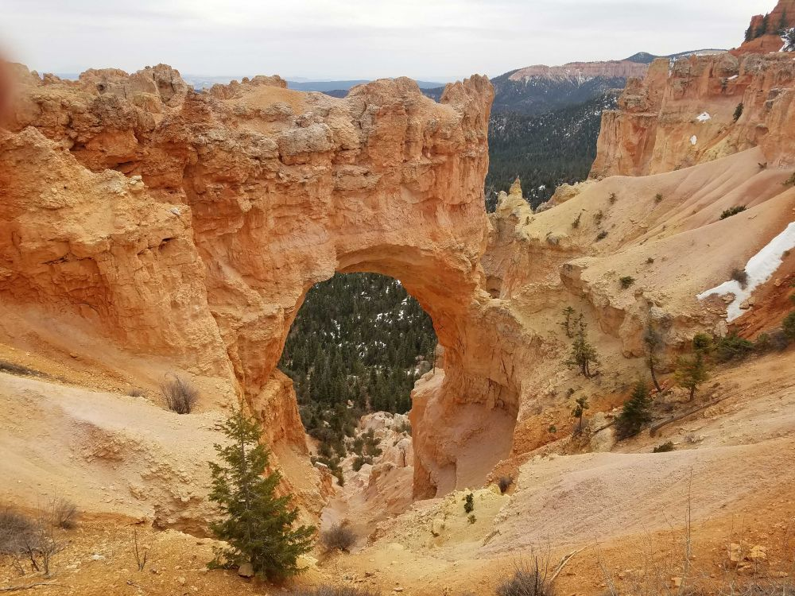
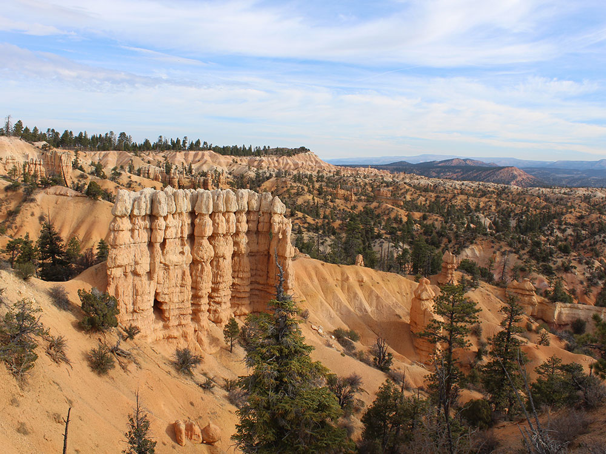

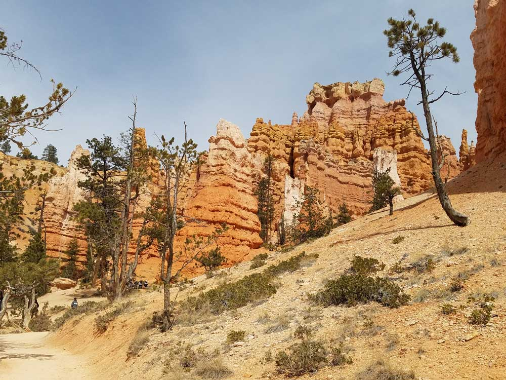
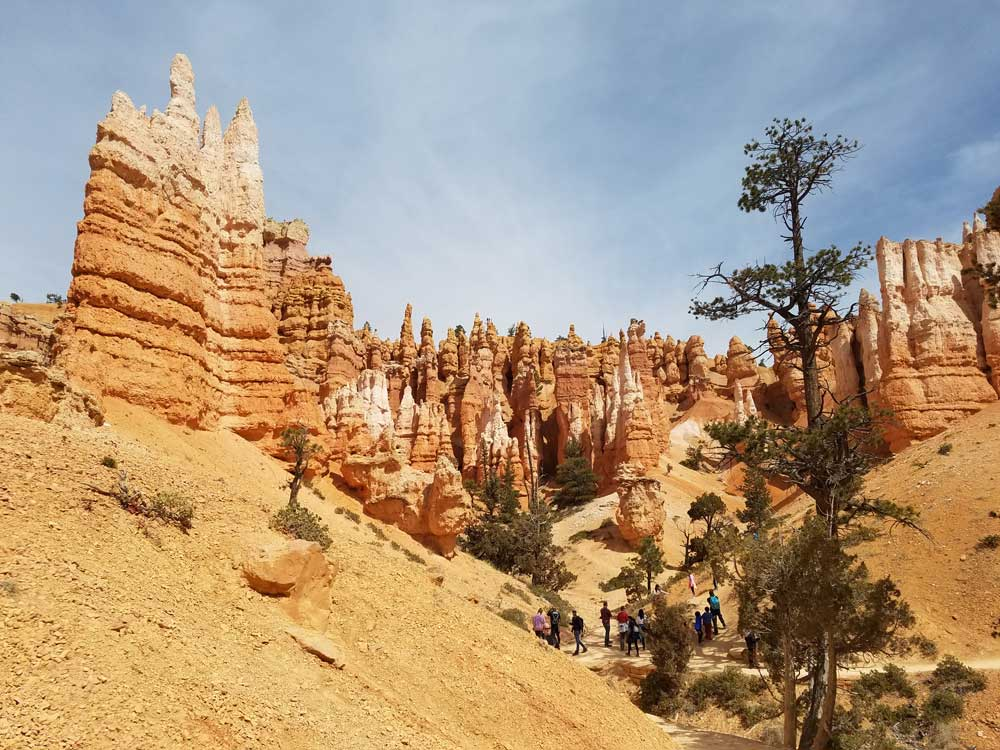
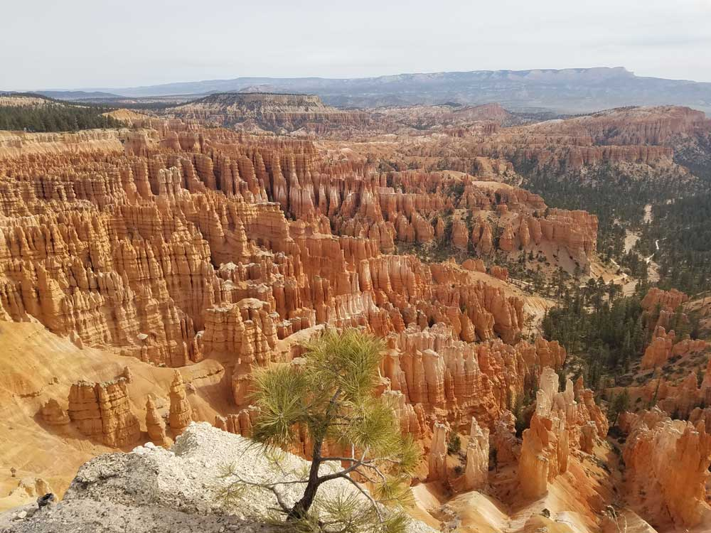
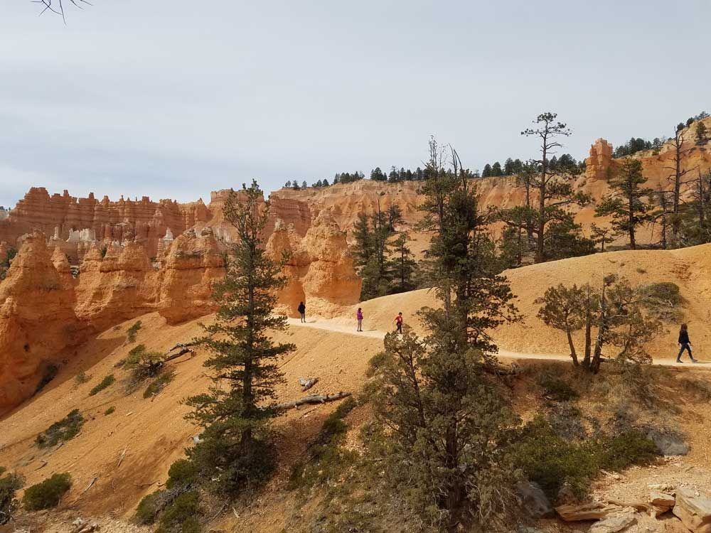